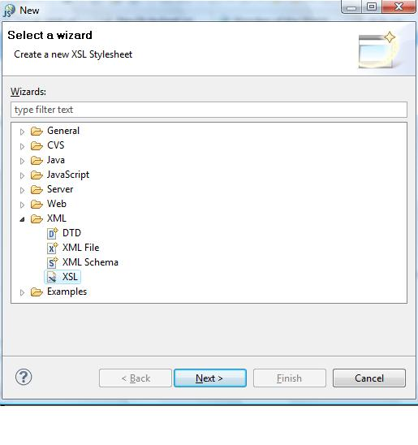
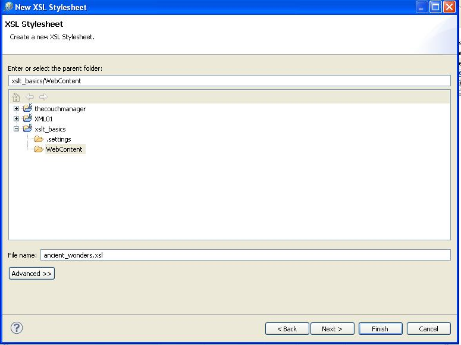
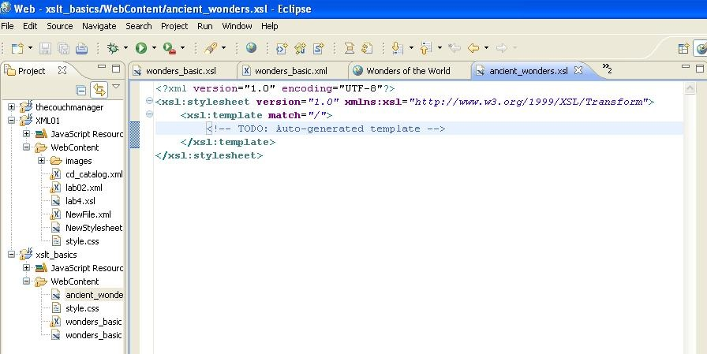
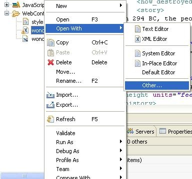
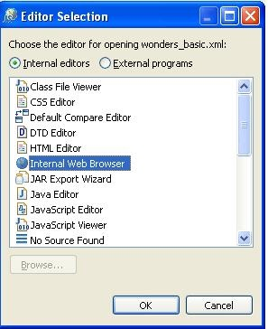
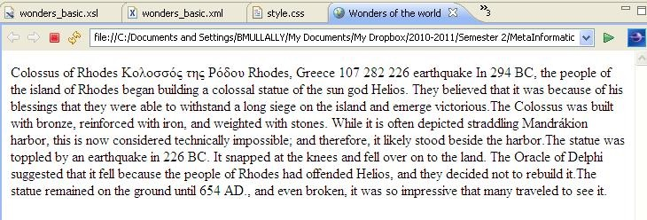
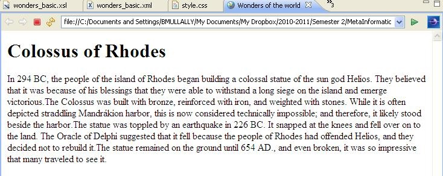

Open the project you used for lab02 and lab03 for the ancient wonders XML file. Click on the webcontent folder (or the project folder if you do not have a WebContent folder) and create a new file in your project by right clicking choose the New->Other option and then choose xslt as the file type.

Click Next and then name the file ancient_wonders. Click Finish.

A new xsl file opens in your eclipse window, it contains the necessary processing statements, and it also contains a root template.

Your XML file must have a link to the XSLT style sheet. When you open your XML document in an XSLT processor or a browser, the instruction tells the processor to perform the XSLT transformation before displaying the document.
Open the ancient wonders xml file by clicking on the link. In the web browser choose file->save as, then choose web page xml only as the file type. Save it into the webconent directory of your project. In eclispse refresh the project folder by clicking F5 and you should see the file wonders_basic.xml appear.
Open it for editing and add the following link. The link should be added directly after the first <?xml version="1.0"?> processing statement.
<?xml-stylesheet type="text/xsl" href="ancient_wonders.xsl"?>
The first step in the XML transformation invovles the XSLT processor analysing the XML document and converting it into a node tree. A node tree is a hierarchical representation of the XML document. In the tree a node is one individual piece of the XML document such as an element, an attribute, or some text content.
Once the processor has identified the nodes in the source XML, it then looks to an XSLT style sheet for instructions on what to do with those nodes. Those instructions are contained in templates. Eclipse has created the root template for you already. Within the opening and closing tags of that root template is where you will write your html and xsl code.
To have your XSLT processor output HTML, you will need to use the xsl:output processing instruction. You set the output method to html, xml, or text. If the instruction is omitted, processors will output XML by default.
Add the following instruction to your xsl file (directly after the xsl:stylesheet tag):
<xsl:output method="html"/>
Within the open xsl:template match="/" element and closing element include the following:
<html>
<head>
<title>Wonders of the world</title>
</head>
<body>
<p><xsl:value-of select="ancient_wonders"></xsl:value-of></p>
</body>
</html>
Here you can see the use of XPATH to locate the node you wish to output. In this example we have given the path to the element called ancient_wonders, this by default means all that is contained in ancient_wonders will be outputted.
Save your xsl file. Right click on your xml file and choose Open with -> Other

From the list choose Internal Web Browser.

A new tab will open in your eclipse window, this will display the html output for your xml file, using your xsl file for the transformation.

The one xsl instruction has presented all of the content for the first wonder element. The wonder element has 9 child elements, the conent from all of those child elements is outputed.
Change the xsl instruction so that only the story element is outputed. Refer to the lecture notes on XPATH or the tutorial on W3C schools website. Save the change to your xsl file and refresh the internal web browser to see the change.

For the heading, make sure you use an xsl instruction to output the name of the wonder. At this stage you should have a h1 tag which contains an xsl instruction and then the story is outputted in a p tag.
Try presenting the wonder element in it's different parts. For example output the name as the heading followed by its location and height then the story. What html elements will you use to present the data?